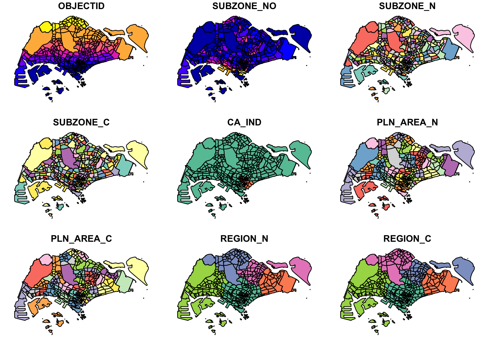
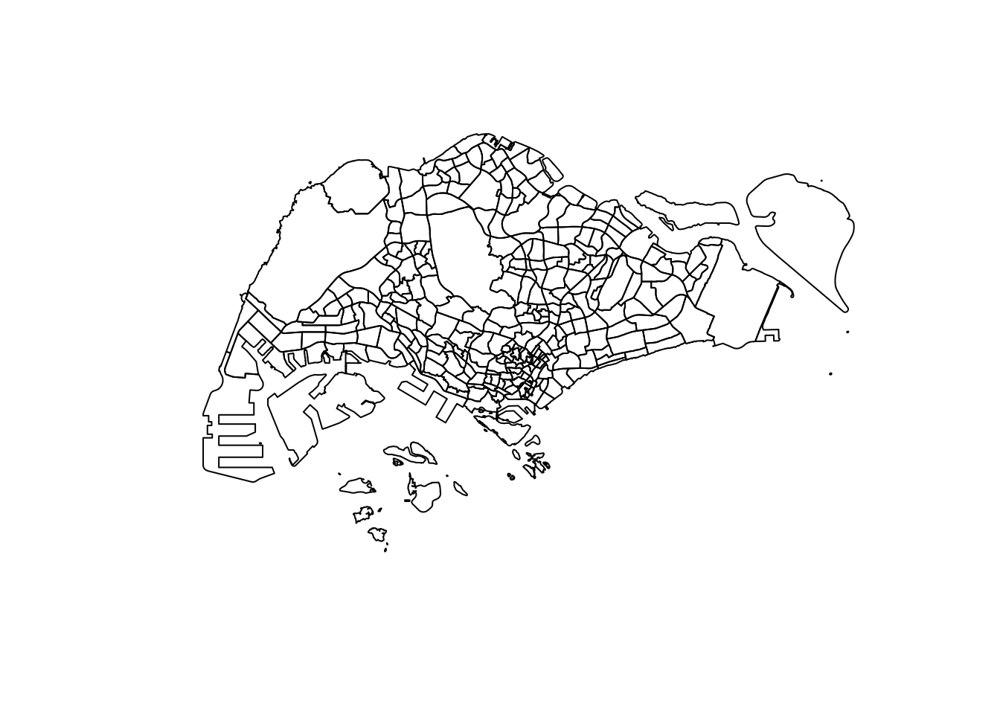
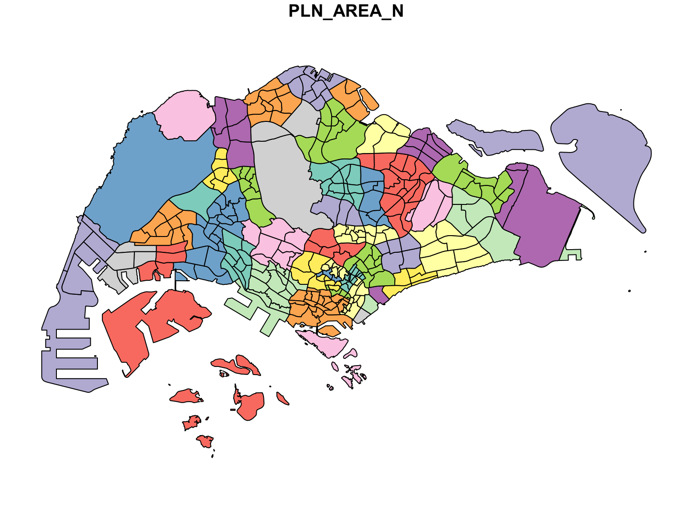
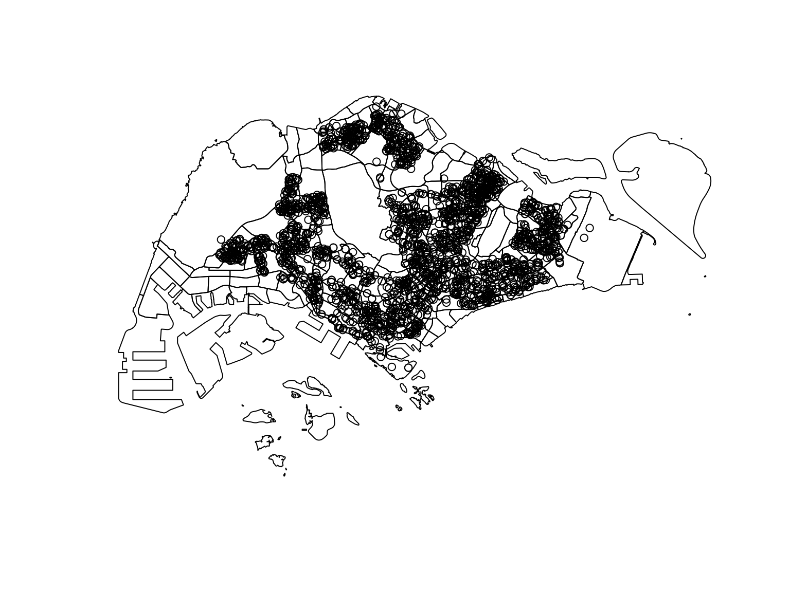
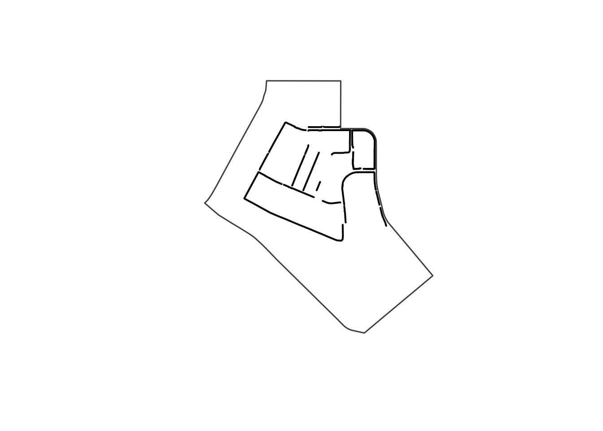
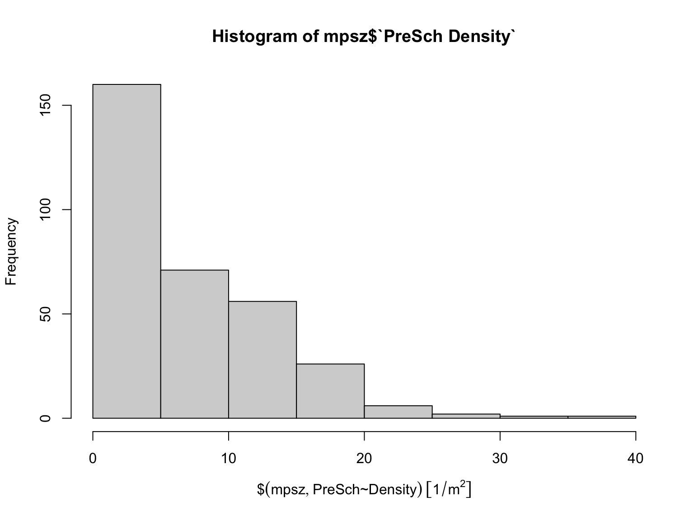
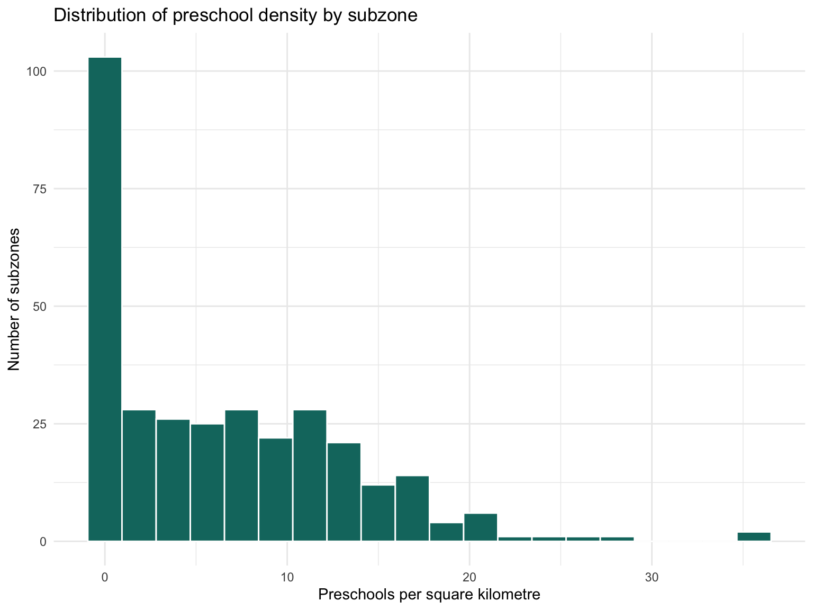
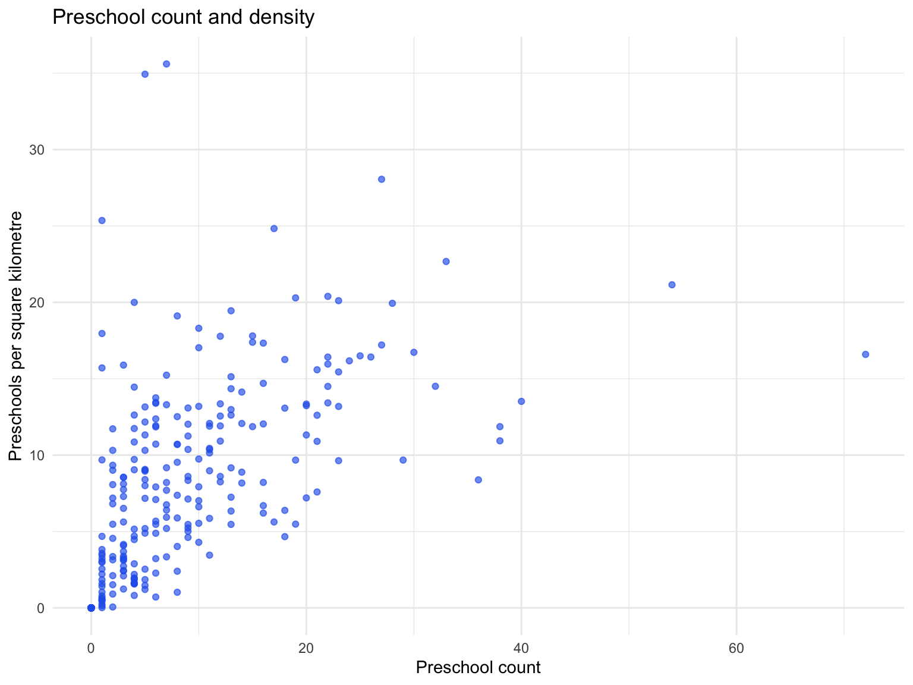

pacman::p_load(sf, tidyverse)Geospatial Data Science with R
Hands-on Exercise 1
1 Overview
I use this page to reproduce the Chapter 1 workflow with the local data folder. My focus is on the basic geospatial steps: importing layers, checking CRS, converting tabular coordinates into sf, and doing simple geometry operations.
NoteLocal Implementation Note
All data for this exercise is stored in Hands-on_Ex/Hands-on_Ex01/data, so the code below uses local relative paths such as data/geospatial and data/aspatial/listings.csv.
2 Getting Started
3 Importing Geospatial Data
The first step is to bring the Singapore planning subzone boundary, cycling path layer, and preschool point layer into R. The Master Plan 2014 boundary and cycling path files are read as vector layers, while the preschool layer is read from the local KML derived from the downloaded GeoJSON.
mpsz = st_read(dsn = "data/geospatial",
layer = "MP14_SUBZONE_WEB_PL",
quiet = TRUE)cyclingpath = st_read(dsn = "data/geospatial",
layer = "CyclingPathGazette",
quiet = TRUE)cyclingpath <- st_set_crs(cyclingpath, 3414)preschool = st_read("data/geospatial/PreSchoolsLocation.kml",
quiet = TRUE) %>%
st_zm(drop = TRUE, what = "ZM") %>%
st_transform(crs = 3414)The geometry column tells us what spatial type is stored in each object. For the planning subzones, the geometry is polygon-based because each row represents an areal unit.
st_geometry(mpsz)Geometry set for 323 features
Geometry type: MULTIPOLYGON
Dimension: XY
Bounding box: xmin: 2667.538 ymin: 15748.72 xmax: 56396.44 ymax: 50256.33
Projected CRS: SVY21 / Singapore TM
First 5 geometries:glimpse(mpsz)Rows: 323
Columns: 16
$ OBJECTID <int> 21, 22, 23, 24, 25, 26, 27, 28, 29, 30, 31, 32, 33, 34, 35,…
$ SUBZONE_NO <int> 2, 2, 3, 4, 5, 4, 10, 12, 4, 6, 1, 1, 3, 8, 3, 7, 9, 2, 13,…
$ SUBZONE_N <chr> "PEOPLE'S PARK", "BUKIT MERAH", "CHINATOWN", "PHILLIP", "RA…
$ SUBZONE_C <chr> "OTSZ02", "BMSZ02", "OTSZ03", "DTSZ04", "DTSZ05", "OTSZ04",…
$ CA_IND <chr> "Y", "N", "Y", "Y", "Y", "Y", "N", "Y", "N", "Y", "Y", "Y",…
$ PLN_AREA_N <chr> "OUTRAM", "BUKIT MERAH", "OUTRAM", "DOWNTOWN CORE", "DOWNTO…
$ PLN_AREA_C <chr> "OT", "BM", "OT", "DT", "DT", "OT", "BM", "DT", "BM", "DT",…
$ REGION_N <chr> "CENTRAL REGION", "CENTRAL REGION", "CENTRAL REGION", "CENT…
$ REGION_C <chr> "CR", "CR", "CR", "CR", "CR", "CR", "CR", "CR", "CR", "CR",…
$ INC_CRC <chr> "B4120D23006C932A", "1C51019439A68700", "0FF1661344C84AED",…
$ FMEL_UPD_D <chr> "20160511160621", "20160511160621", "20160511160621", "2016…
$ SHAPE_Area <dbl> 93140.44, 411722.82, 587222.68, 39437.94, 188767.49, 133006…
$ SHAPE_Leng <dbl> 1822.1927, 3074.9632, 4297.5999, 871.5549, 1872.7522, 1605.…
$ X_ADDR <dbl> 28831.78, 26360.80, 29153.97, 29706.72, 29968.62, 29509.64,…
$ Y_ADDR <dbl> 29419.65, 29384.14, 29158.04, 29744.91, 29572.76, 29646.45,…
$ geometry <MULTIPOLYGON [m]> MULTIPOLYGON (((29099.02 29..., MULTIPOLYGON (…head(mpsz, n=5)Simple feature collection with 5 features and 15 fields
Geometry type: MULTIPOLYGON
Dimension: XY
Bounding box: xmin: 25744.94 ymin: 28515.07 xmax: 30213.96 ymax: 29880.82
Projected CRS: SVY21 / Singapore TM
OBJECTID SUBZONE_NO SUBZONE_N SUBZONE_C CA_IND PLN_AREA_N PLN_AREA_C
1 21 2 PEOPLE'S PARK OTSZ02 Y OUTRAM OT
2 22 2 BUKIT MERAH BMSZ02 N BUKIT MERAH BM
3 23 3 CHINATOWN OTSZ03 Y OUTRAM OT
4 24 4 PHILLIP DTSZ04 Y DOWNTOWN CORE DT
5 25 5 RAFFLES PLACE DTSZ05 Y DOWNTOWN CORE DT
REGION_N REGION_C INC_CRC FMEL_UPD_D SHAPE_Area SHAPE_Leng
1 CENTRAL REGION CR B4120D23006C932A 20160511160621 93140.44 1822.1927
2 CENTRAL REGION CR 1C51019439A68700 20160511160621 411722.82 3074.9632
3 CENTRAL REGION CR 0FF1661344C84AED 20160511160621 587222.68 4297.5999
4 CENTRAL REGION CR 615D4EDDEF809F8E 20160511160621 39437.94 871.5549
5 CENTRAL REGION CR 72107B11807074F4 20160511160621 188767.49 1872.7522
X_ADDR Y_ADDR geometry
1 28831.78 29419.65 MULTIPOLYGON (((29099.02 29...
2 26360.80 29384.14 MULTIPOLYGON (((26750.09 29...
3 29153.97 29158.04 MULTIPOLYGON (((29161.2 297...
4 29706.72 29744.91 MULTIPOLYGON (((29814.11 29...
5 29968.62 29572.76 MULTIPOLYGON (((30137.77 29...4 Visualising Simple Feature Objects
The default plot() method is a quick diagnostic view. It is not a publication map, but it is useful for confirming that the geometries and selected attributes look sensible.
plot(mpsz)
plot(st_geometry(mpsz))
plot(mpsz["PLN_AREA_N"])
Overlaying preschool locations on the subzone boundary is an immediate visual check that the points fall within Singapore after projection.
plot(st_geometry(mpsz))
plot(st_geometry(preschool), add = TRUE)
5 Checking Coordinate Reference Systems
Distance and area calculations should be done in a projected coordinate system. For Singapore, SVY21 / EPSG:3414 is appropriate because its units are metres.
st_crs(mpsz)Coordinate Reference System:
User input: SVY21 / Singapore TM
wkt:
PROJCRS["SVY21 / Singapore TM",
BASEGEOGCRS["SVY21",
DATUM["SVY21",
ELLIPSOID["WGS 84",6378137,298.257223563,
LENGTHUNIT["metre",1]]],
PRIMEM["Greenwich",0,
ANGLEUNIT["degree",0.0174532925199433]],
ID["EPSG",4757]],
CONVERSION["Singapore Transverse Mercator",
METHOD["Transverse Mercator",
ID["EPSG",9807]],
PARAMETER["Latitude of natural origin",1.36666666666667,
ANGLEUNIT["degree",0.0174532925199433],
ID["EPSG",8801]],
PARAMETER["Longitude of natural origin",103.833333333333,
ANGLEUNIT["degree",0.0174532925199433],
ID["EPSG",8802]],
PARAMETER["Scale factor at natural origin",1,
SCALEUNIT["unity",1],
ID["EPSG",8805]],
PARAMETER["False easting",28001.642,
LENGTHUNIT["metre",1],
ID["EPSG",8806]],
PARAMETER["False northing",38744.572,
LENGTHUNIT["metre",1],
ID["EPSG",8807]]],
CS[Cartesian,2],
AXIS["northing (N)",north,
ORDER[1],
LENGTHUNIT["metre",1]],
AXIS["easting (E)",east,
ORDER[2],
LENGTHUNIT["metre",1]],
USAGE[
SCOPE["Cadastre, engineering survey, topographic mapping."],
AREA["Singapore - onshore and offshore."],
BBOX[1.13,103.59,1.47,104.07]],
ID["EPSG",3414]]mpsz <- st_set_crs(mpsz, 3414)st_crs(mpsz)Coordinate Reference System:
User input: EPSG:3414
wkt:
PROJCRS["SVY21 / Singapore TM",
BASEGEOGCRS["SVY21",
DATUM["SVY21",
ELLIPSOID["WGS 84",6378137,298.257223563,
LENGTHUNIT["metre",1]]],
PRIMEM["Greenwich",0,
ANGLEUNIT["degree",0.0174532925199433]],
ID["EPSG",4757]],
CONVERSION["Singapore Transverse Mercator",
METHOD["Transverse Mercator",
ID["EPSG",9807]],
PARAMETER["Latitude of natural origin",1.36666666666667,
ANGLEUNIT["degree",0.0174532925199433],
ID["EPSG",8801]],
PARAMETER["Longitude of natural origin",103.833333333333,
ANGLEUNIT["degree",0.0174532925199433],
ID["EPSG",8802]],
PARAMETER["Scale factor at natural origin",1,
SCALEUNIT["unity",1],
ID["EPSG",8805]],
PARAMETER["False easting",28001.642,
LENGTHUNIT["metre",1],
ID["EPSG",8806]],
PARAMETER["False northing",38744.572,
LENGTHUNIT["metre",1],
ID["EPSG",8807]]],
CS[Cartesian,2],
AXIS["northing (N)",north,
ORDER[1],
LENGTHUNIT["metre",1]],
AXIS["easting (E)",east,
ORDER[2],
LENGTHUNIT["metre",1]],
USAGE[
SCOPE["Cadastre, engineering survey, topographic mapping."],
AREA["Singapore - onshore and offshore."],
BBOX[1.13,103.59,1.47,104.07]],
ID["EPSG",3414]]preschool <- st_transform(preschool, crs = 3414)plot(st_geometry(mpsz))
plot(st_geometry(preschool), add = TRUE)
TipWhat I Noticed
The first overlay makes the preschool points look misplaced because the layers start in different coordinate systems. After transforming to SVY21, the points line up with the subzone boundary, which confirms why CRS checking cannot be skipped.
6 Importing Aspatial Data
The Airbnb listings file is a CSV table with longitude and latitude columns. It starts as non-spatial data, then becomes an sf point layer after assigning WGS84 coordinates and transforming to SVY21.
listings <- read_csv("data/aspatial/listings.csv")list(listings)[[1]]
# A tibble: 3,247 × 19
id name host_id host_profile_id host_name neighbourhood_group
<dbl> <chr> <dbl> <dbl> <chr> <chr>
1 71609 Ensuite Room (… 3.67e5 1.46e18 Belinda East Region
2 71896 B&B Room 1 ne… 3.67e5 1.46e18 Belinda East Region
3 71903 Room 2-near Ai… 3.67e5 1.46e18 Belinda East Region
4 294281 5 mins walk fr… 1.52e6 1.46e18 Elizbeth Central Region
5 344803 Budget short s… 3.67e5 1.46e18 Belinda East Region
6 369141 5mins from New… 1.52e6 1.46e18 Elizbeth Central Region
7 369145 5 mins walk fr… 1.52e6 1.46e18 Elizbeth Central Region
8 4069756 DORMS - In the… 1.75e7 1.46e18 Royal Central Region
9 4211375 Near NTU Amazi… 1.23e7 1.46e18 Mia West Region
10 4271250 City Ctr_River… 2.22e7 1.46e18 Yong Xing Central Region
# ℹ 3,237 more rows
# ℹ 13 more variables: neighbourhood <chr>, latitude <dbl>, longitude <dbl>,
# room_type <chr>, price <dbl>, minimum_nights <dbl>,
# number_of_reviews <dbl>, last_review <date>, reviews_per_month <dbl>,
# calculated_host_listings_count <dbl>, availability_365 <dbl>,
# number_of_reviews_ltm <dbl>, license <chr>listings_sf <- st_as_sf(listings,
coords = c("longitude", "latitude"),
crs=4326) %>%
st_transform(crs = 3414)glimpse(listings_sf)Rows: 3,247
Columns: 18
$ id <dbl> 71609, 71896, 71903, 294281, 344803, 36…
$ name <chr> "Ensuite Room (Room 1 & 2) near EXPO", …
$ host_id <dbl> 367042, 367042, 367042, 1521514, 367042…
$ host_profile_id <dbl> 1.462517e+18, 1.462517e+18, 1.462517e+1…
$ host_name <chr> "Belinda", "Belinda", "Belinda", "Elizb…
$ neighbourhood_group <chr> "East Region", "East Region", "East Reg…
$ neighbourhood <chr> "Tampines", "Tampines", "Tampines", "Ne…
$ room_type <chr> "Private room", "Private room", "Privat…
$ price <dbl> NA, NA, NA, 32, 15, NA, 26, 11, 28, 48,…
$ minimum_nights <dbl> 92, 92, 92, 92, 92, 92, 92, 92, 92, 92,…
$ number_of_reviews <dbl> 19, 24, 46, 131, 60, 81, 163, 20, 0, 17…
$ last_review <date> 2020-01-17, 2019-10-13, 2020-01-09, 20…
$ reviews_per_month <dbl> 0.11, 0.13, 0.25, 0.75, 0.34, 0.52, 0.9…
$ calculated_host_listings_count <dbl> 5, 5, 5, 7, 5, 7, 7, 4, 2, 1, 8, 1, 73,…
$ availability_365 <dbl> 90, 90, 90, 364, 364, 364, 364, 364, 36…
$ number_of_reviews_ltm <dbl> 0, 0, 0, 0, 0, 0, 0, 0, 0, 0, 0, 0, 0, …
$ license <chr> NA, NA, NA, NA, NA, NA, NA, NA, NA, NA,…
$ geometry <POINT [m]> POINT (41972.5 36390.05), POINT (…7 Geoprocessing With Buffer
This section creates a 5 metre buffer around cycling paths. The result is useful for asking how much land area is covered by a narrow corridor around the cycling network.
buffer_cycling <- st_buffer(cyclingpath,
dist=5,
nQuadSegs = 30)buffer_cycling$AREA <- st_area(buffer_cycling)buffer_cycling <- buffer_cycling %>%
mutate(AREA = st_area(geometry))sum(buffer_cycling$AREA)2453902 [m^2]The next operation narrows the cycling-path buffer to a single subzone, Tampines West.
mpsz_selected <- mpsz %>%
filter(SUBZONE_N == "TAMPINES WEST")buffer_cycling_selected <- st_intersection(buffer_cycling,
mpsz_selected)plot(st_geometry(mpsz_selected), border = "grey30", lwd = 1.5)
plot(st_geometry(buffer_cycling_selected), col = "lightblue", add = TRUE)
NoteWhat I Noticed
The cycling path layer is a current local download, so the buffered area should be read as my reproducible result from this dataset.
8 Point-in-Polygon Counting
The subzone polygon layer can be used to count how many preschool points fall inside each subzone.
mpsz$`PreSch Count`<- lengths(st_intersects(mpsz, preschool))summary(mpsz$`PreSch Count`) Min. 1st Qu. Median Mean 3rd Qu. Max.
0.00 0.00 4.00 7.09 10.00 72.00 top_n(mpsz, 1, `PreSch Count`)Simple feature collection with 1 feature and 16 fields
Geometry type: MULTIPOLYGON
Dimension: XY
Bounding box: xmin: 39655.33 ymin: 35966 xmax: 42940.57 ymax: 38622.37
Projected CRS: SVY21 / Singapore TM
OBJECTID SUBZONE_NO SUBZONE_N SUBZONE_C CA_IND PLN_AREA_N PLN_AREA_C
1 204 2 TAMPINES EAST TMSZ02 N TAMPINES TM
REGION_N REGION_C INC_CRC FMEL_UPD_D SHAPE_Area SHAPE_Leng
1 EAST REGION ER 21658EAAF84F4D8D 20160511160621 4339824 10180.62
X_ADDR Y_ADDR geometry PreSch Count
1 41122.55 37392.39 MULTIPOLYGON (((42196.76 38... 729 Density Calculation
A count alone can be misleading because subzones have different sizes. Density standardises the count by area, here expressed as preschools per square kilometre.
mpsz$Area <- mpsz %>%
st_area()mpsz <- mpsz %>%
mutate(`PreSch Density` = `PreSch Count`/Area * 1000000)hist(mpsz$`PreSch Density`)
ggplot(data = mpsz,
aes(x = as.numeric(`PreSch Density`))) +
geom_histogram(bins = 20,
colour = "white",
fill = "#0f766e") +
labs(title = "Distribution of preschool density by subzone",
x = "Preschools per square kilometre",
y = "Number of subzones") +
theme_minimal()
ggplot(data = st_drop_geometry(mpsz),
aes(x = `PreSch Count`,
y = as.numeric(`PreSch Density`))) +
geom_point(alpha = 0.65, colour = "#2563eb") +
labs(title = "Preschool count and density",
x = "Preschool count",
y = "Preschools per square kilometre") +
theme_minimal()
top_preschool_count <- mpsz %>%
st_drop_geometry() %>%
arrange(desc(`PreSch Count`)) %>%
select(SUBZONE_N, PLN_AREA_N, `PreSch Count`, `PreSch Density`) %>%
slice_head(n = 5)
top_preschool_count SUBZONE_N PLN_AREA_N PreSch Count PreSch Density
1 TAMPINES EAST TAMPINES 72 16.59053 [1/m^2]
2 WOODLANDS EAST WOODLANDS 54 21.14775 [1/m^2]
3 ALJUNIED GEYLANG 40 13.51640 [1/m^2]
4 TAMPINES WEST TAMPINES 38 10.93459 [1/m^2]
5 BEDOK NORTH BEDOK 38 11.86142 [1/m^2]
TipWhat I Noticed
With the current preschool layer, Tampines East has the largest raw count in my output. The density plot is still useful because a compact subzone can look more intense than a larger subzone with a similar number of preschools.
10 Takeaway
The workflow shows why CRS checks and geometry operations are central to geospatial analysis. With the current preschool data, the areas with the highest raw counts are not always the same as the areas with the highest density, because compact subzones can have high service concentration even with moderate counts.
11 References
- R for Geospatial Data Science and Analytics, Chapter 1: Geospatial Data Science with R
- data.gov.sg: Pre-Schools Location
- data.gov.sg: Master Plan 2014 Subzone Boundary No Sea
- LTA DataMall: Cycling Path geospatial dataset
- Inside Airbnb: Singapore listings data